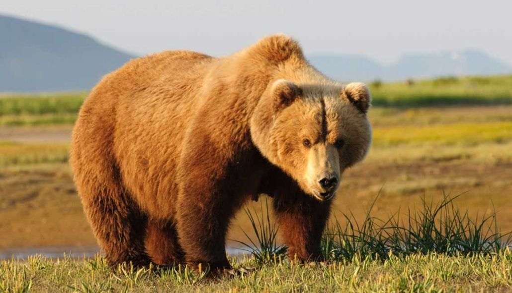

El oso pardo (Ursus arctos) se encuentra distribuido por gran parte del hemisferio norte, Europa, Asia y la parte oeste de Estados Unidos, Alaska y Canadá. Al ser una especie tan extendida, muchas de las poblaciones son consideradas subespecies, existiendo unas 12 distintas.
Un ejemplo es el oso Kodiak (Ursus arctos middendorffi) que habita el archipiélago Kodiak en Alaska. Los tipos de osos en España quedan reducidos a la especie europea, Ursus arctos arctos, que se encuentra desde el norte de la Península Ibérica hasta Escandinavia y Rusia.
Los osos pardos no sólo son marrones, también pueden ser negros o color crema. El tamaño varía según la subespecie, entre 90 y 550 kilogramos. En el rango superior de peso encontramos al oso Kodiak y en el inferior al oso europeo.
Ocupan una gran variedad de hábitat, desde estepas asiáticas secas hasta matorrales árticos y bosques húmedos templados. Al vivir en una mayor diversidad de hábitats que cualquier otra especie de oso, también explotan una gran variedad de alimentos. En Estados Unidos, son más carnívoros conforme nos acercamos al polo norte, donde habitan más ungulados y pueden encontrar salmón. En Europa y Asia llevan una dieta más omnívora.
La reproducción se produce entre los meses de abril y julio, pero el óvulo fecundado no se implanta en el útero hasta el otoño. Los cachorros, de uno a tres, nacen en enero o febrero, cuando la madre está hibernando. Estarán con ella durante dos o cuatro años.
